北海道遠征
2009/06/23
先月20日21日 に北海道連盟主催の「スズランボウル」へ招待され、昨年北海道リーグ優勝校北海道大学とのボウルゲームを行うため、1泊2日の北海道遠征へ行ってきた。
今回で35回目を数えるスズランボウルは、毎年関東連盟の代表校 と北海道連盟の代表校同士が行うボウルゲームである。今回は東海大学として2度目のスズランボウル の参加となった。(前回は2000年東海大 学VS北海道大学 33-0)
今年から全国選手権化するにあたり、例年以上にスズランボウルの位置づけが重要なものとして考えられている。
TRITONSの遠征メンバーは選抜メンバーのみの参加となった。東海大学、関東学生連盟の代表として恥 じないメンバー選出を行った。
今回の遠征は、現役学生にとって初めてのづくしの遠征となった。初めての飛行機を利用した北海道遠征・初めての会場・初 めての対戦相手・初めてのボウルゲーム・初めての15分クォーターゲーム…と多くの不安と、期待が 入り混じった中で当日を迎えた。
北海道は、関東と比べて気温差約20度。湿度も低く、半そでのTシャツだと肌寒さを感じるほどの気候であった。
到着後バスへ乗り、東海大学札幌校舎へ移動した。
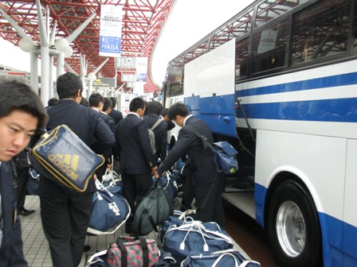
今回の遠征に伴い、札幌校舎の方々からご協力を頂き、建学祭期間にも関わらず、練習場所を提供して頂いた。
1時間30分程度の練習で新鮮な北海道 の空気を感じ、汗を流した。
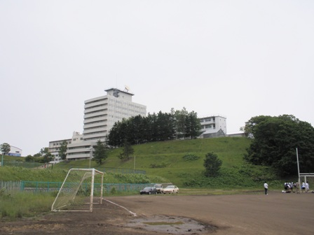
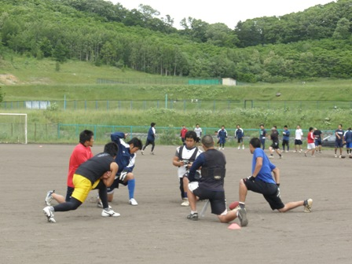
バスで、お世話になるホテル「鹿の湯」へ移動し、バイキング食、大浴場での入浴では、食べ盛りの学生たちのお腹も旅の疲 れも癒し、それぞれの心も満たして頂きました。
夜には、翌日の試合へ向けてのミーティングを行い、各自・各ユニットで試合へ向けての最終確認・準備を行い、就寝しまし た。
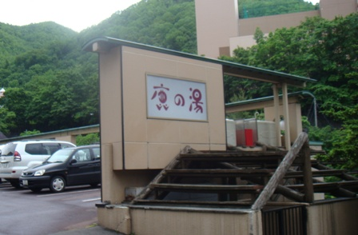
６月２１日
会場に到着し、試合は定刻通り、13:30にKICK OFFした。
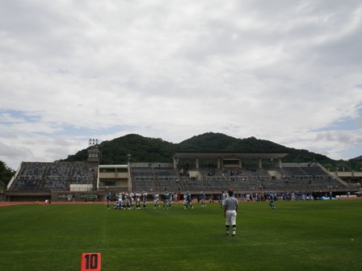
試合は、【ゲームレポート参照】
東海大学のキックで始まった１Q。朝まで降っていた雨が風を呼 び、キックしたボールはエンドゾーンを超えタッチバックとなり、良好のフィールドポジションをディフェンスに継いだ。しかし、相手のランプレーを止められ ることができず、自陣深く攻め込まれたところでボールは東海オフェンスへと。自陣4ydからの攻撃 に焦る東海オフェンスであったが、RB#2堀井（4年） の57ydのゲインで大きく前進した。敵陣に入ると、ランプレーを中心に次々とフレッシュを獲得 し、RB#2堀井のランで先制点を挙げた。東海大学のペースへと持ち込みたいところだが、相手のラ ンプレーに東海ディフェンスが苦戦し、とうとうTDを許してしまう。TRITONSも、２Qに入るとRB陣を中心に2TDを挙げ、勢いを取り戻す。しかし、 喜びもつかの間相手に次々とフレッシュを奪われるとFGで3点 の追加点を許してしまい、20-10で前半を折り返した。
開始2分、前半の流れを 修正するように丁寧なパスとランで攻め込み、RB#2堀井がTDを 決める。すると、次の相手の攻撃ではDL#77入川（3年） のファンブルリカバーが飛び出し、敵陣17ydでオフェンスに継ぐとRB#2堀井が走り切りTD。立て続けにTDを奪われた北大オフェンスは、ランを中心にゲインを重ね、徐々にTRITONSの 陣地へ侵入した。自陣4ydまで攻められ緊張が走る東海ディフェンスだったが、相手のファンブルをDL#92保谷（2年）が冷静にリカバーすると、ここ で流れは一気にTRITONSへ。RB#23清 水（2年）が91ydを独走し、見事なTDランを披露する。それに続き、東海ディフェンスも相手の侵入を一歩も許さない好ディフェンスを続け、オ フェンスに繋ぐとWR#１１美馬（3年）が エンドゾーン付近まで走り込み、RB#2堀井のランでTD。
4Qに入ってもTRITONSの勢いは止まることはなく、相手のパスを吸い込むようにDB#21渡 辺（4年）のインターセプトが決まる。このまま流れをものにしたいTRITONSは、ここでQB#10原澤（3年）を起用。TE#19香川（3年）への安定したパスでゲインを重ね、RB#2堀井が 本日6本目となるTDランを見せる。その後 もRB#34板井（4年）やRB#3鈴木（2年）のランを中心に展開し、最後はRB#3鈴木が意地を見せ堂々のTD。第35回スズランボウルは60-13で幕を閉じた。
試合終了後、表彰式が行われました。
・勝利チーム：東海大学
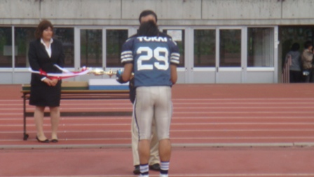
・最優秀オフェンス：東海大学QB♯7長尾朋也
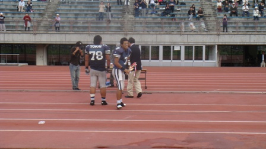
・最優秀ディフェンス：東海大学OL/DL♯78長谷川満
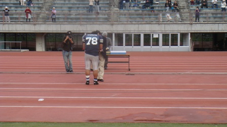
・敢闘賞：北海道大学 #3 WR 松浪秀法
#5 RB 今坂一也
・MVP：東海大学RB♯2堀井輝
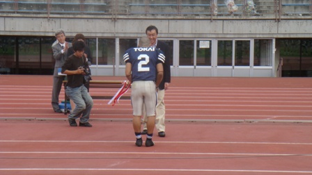
となりました。試合後に空港へ移動し、その日のうちに関東へ飛び立ちました。
父母会やOB会の方々もわざわざ北海道の地まで応援に来て頂き、 本当にありがとうございました。
空港への到着が深夜になってしまうということもあり、東海大学の全日本クラスの大会時しか使用できないというバスを特別 に用意して頂き、無事それぞれの家路に着く事が出来ました。
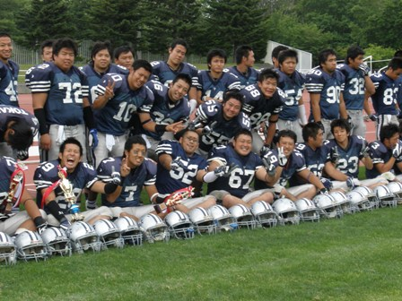
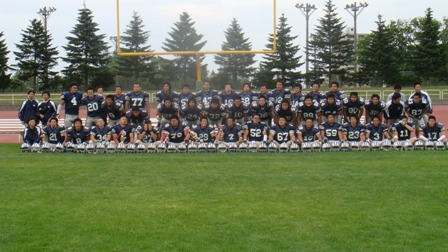
今回の遠征を通じて、私たちは多くの人々に支えられているということを再認識することができました。北海道連盟の方々、 北海道大学BigGreenの方々、東海大学札幌校舎の方々、東海大学湘南校舎の方々、そして遠方 の北海道まで来て頂いたOB会や父母会の皆さま、現在このHPを ご覧頂いている方々…AND MORE…
本当に多くの人々の支えと期待を選手・スタッフ一同感じました。この期待に応えられるよう、夏の練習そして秋のリーグ戦 に繋げていきたいと思います。
主務 鈴木智也
コメント